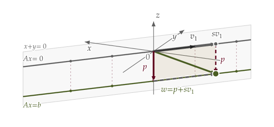

Scale v₁, then add p
Predict: The gray line holds every solution vₕ = sv₁ of the homogeneous system. Suppose the same vector p is added to each of them. What shape do the sums p + sv₁ form, and where does it sit relative to the gray line?
w = p + sv₁ = (0, 0, −1) + 1.5(−1, 1, 0) = (−1.5, 1.5, −1)
Both lines continue beyond the picture. Every axis uses the same unit scale. The faint rectangle is part of the plane x + y = 0, which contains both lines; the dots mark s = −2, −1, 0, 1, 2.
Move s, or press Play to follow the construction: scale v₁, then add p.
Camera controls
Drag the plot, focus it and use the arrow keys, or use these sliders. Reset restores the starting view.

Read the guided explanation
- Scale. The homogeneous system has the solutions vₕ = sv₁, the multiples of its basic solution v₁ = (−1, 1, 0). The thin dark arrow is v₁ itself and the thick gray arrow is sv₁: longer when |s| > 1, shorter when |s| < 1, reversed when s < 0. Its tip never leaves the gray line.
- Add. To add p, place the tail of one vector at the tip of the other. The dashed gray arrow is sv₁ starting at the tip of p; the dashed wine arrow is p starting at the tip of sv₁. Both end at the same point, the tip of w = p + sv₁, and the four arrows form a parallelogram.
- Check. The readout substitutes sv₁ into the homogeneous system and w into the non-homogeneous one. The left-hand sides are the same in both systems, so adding p changes each of them by exactly what p contributes: −1, 1 and 0.
- Every solution. As s runs over all real numbers, the tip of w traces the olive line. The faint dashed segments show the same p carrying five points of the gray line to the olive line.
The point (1, −1, −1) also solves the non-homogeneous system. If it is used as p, which parts of the picture change and which stay the same? Decide, then press the button to check.